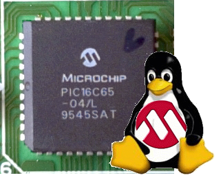
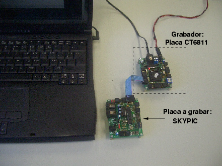
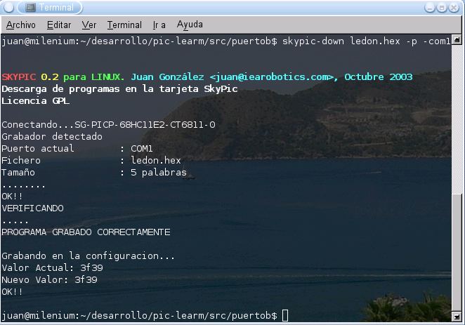

|
SKYPIC-DOWN: Software de grabación para los microcontroladores PIC |

Software de grabación para los microcontroladores PIC. Se utiliza con grabadores basados en el proyecto Stargate, en los que hay un microcontrolador con el servidor PICP. El programa skypic-down es un cliente para el servidor PICP , que corre en plataformas Linux y en la consola.
Aunque permite grabar cualquiera de los pics soportados por el servidor PICP (Familias 16F8X y 16F87X) en cualquier tarjeta, se ha diseñado para la tarjeta entrenadora SKYPIC, de ahí el nombre de skypic-down.
Permite grabar los pics de las familias 16F8X y 16F87X
Licencia GPL
Plataformas Linux
Licencia GPL. Se conceden permisos para copiar, distribuir, modificar y redistribuir las modificaciones.
Los pasos a seguir para instalar el skypic-down son:
Bajarse el paquete skypic-down-x.x.tgz
Descomprimirlo
$ tar vzxf skypic-down-x.x.tgz
Entrar en el directorio skypic-down y compilar
$ cd skypic-down
$ make
La compilación no es obligatoria. Dentro del paquete se incluye una versión ya compilada.
Copiar el fichero ejecutable skypic-down a un directorio dentro del PATH, como por ejemplo el /usr/local/bin
El proceso de grabación es muy sencillo:
Conectar el stargate al PC y a la placa donde está el PIC que queremos grabar (por ejemplo la skypic). Asegurarse que el stargate tenga grabado el servidor PICP. La configuración de cada stargate depende de la tarjeta que estemos empleando (una CT6811, skypic, etc)
En la siguiente foto se muestra un ejemplo de utilización. Como grabador se usa una tarjeta CT6811 con el servidor PICP. A través de un cable plano de bus se conecta la tarjeta SKYPIC, que lleva el pic16F876A que se quiere grabar.

Ejecutar el programa skypic-down desde una consola:
$ skypic-down ledon.hex -p -com1
El parámetro -com1 indica el puerto serie empleado. El parámetro -p se utiliza para grabar los pics 16F876A, que tienen un protocolo de grabación diferente al de los 16F876. En futuras versiones se autodetectará el tipo de PIC y se seleccionará el protocolo más adecuado.
A continuación se muestra un pantallazo de la grabación del programa ledon.hex, utilizándose un stargate en una CT6811

Los errores que nos podemos encontrar al grabar son:
“---> [ERROR], Verificación incorrecta”. No se ha conseguido verificar la grabación del programa. Es debido a que el PIC a grabar no ha entrado en modo monitor. Las causas de este problema pueden ser:
La placa no está configurada en modo programación. En el caso de la Skypic, revisar el jumper JP3, que es el que configura la placa para ello. Si se usan otras placas, asegurarse de que llegan correctamente los 12v a la pata MCLR.
Protocolo de grabación no correcto. Se está intentado grabar un pic 16F876A y no se ha especificado el parámetro -p, o a la inversa, se está intentado grabar otro PIC y se ha puesto este parámetro.
Placa no conectada al stargate
Placa no alimentada
“---> ERROR: No se estable conexión con el grabador”. No hay conexión con el stargate grabador. Revisar:
Que el stargate esté correctamente conectado al puerto serie del PC
Que esté alimentado
Que se haya especificado el puerto serie adecuado (com1 ó com2)
|
Descarga de ficheros |
|
Fuentes y ejecutable. Versión 0.3. |
|
|
Fuentes y ejecutable. Versión 0.2. |
Autodetección del PIC
Tarjeta SKYPIC: Tarjeta entrenadora para los microcontroladores de las familias de PICs 16f87x y 18fxxx de 28 pines
Servidor PICP: Servidor PICP, para grabación de PICs
Cuaderno técnico 4: Grabación de microcontroladores PIC
Tarjeta PICMIN: Tarjeta mínima para trabajar con los PIC
02/Junio/2004: Liberada Version 0.3
Ya no se produce error al cargar ficheros .hex generados con el compilador de C SDCC.
03/Junio/2004: Publicada la versión 0.2 del Skypic-down
A Andrés Prieto-Moreno Torres, de Ifara Tecnologías, por las pruebas realizadas y por el diseño libre del PCB de la tarjeta SKYPIC. Muchas gracias.
A todo el equipo de Ifara Tecnologías, por financiar la primera tirada de la Skypic y regalarme dos placas montadas y dos PCB. Muchísimas gracias ;-)
Alvaro Marín <alvaro@rigel.deusto.es>. Es el autor del modulo intelHex.c que he utilizado y adaptado para este proyecto.